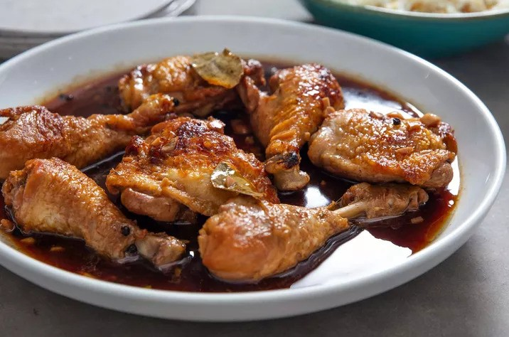

Adobong Manok (Chicken Adobo)
Serves: 4-6
Cook: 45min
Prep: 5min
Description:
Filipino chicken adobo is a beloved, iconic dish where chicken is braised in a savory, tangy, and slightly sweet sauce made primarily from soy sauce, vinegar, garlic, bay leaves, and black peppercorns. It is a simple, staple dish often considered the national dish of the Philippines, typically served with white rice.
Ingredients:
- 5 cloves garlic
- 3 pounds bone-in chicken thighs, drumsticks, or a combination
- 1/2 teaspoon kosher salt
- 1 tablespoon neutral oil, such as canola
- 3 dried bay leaves
- 2 teaspoons whole black peppercorns
- 2 cups water
- 1/2 cup soy sauce, preferably a Filipino brand like Silver Swan
- 1/3 cup cane vinegar
- 3 tablespoons oyster sauce
- Steamed white rice, for serving
Steps:
- In a large bowl, place chicken pieces, soy sauce and crushed garlic to marinade for at least 3 hours.
- Smash and peel 5 garlic cloves. Pat 3 pounds chicken thighs, drumsticks, or a combination dry with paper towels. Season all over with 1/2 teaspoon kosher salt.
- Heat 1 tablespoon neutral oil in a Dutch oven or large heavy-bottomed pot over medium-high heat until shimmering. Working in 2 batches, add the chicken to the pot (skin-side down if using thighs). Sear until browned on all sides, about 6 minutes per batch (reduce the heat as needed if starting to burn). Transfer to a plate.
- Place the garlic, 3 dried bay leaves, and 2 teaspoons whole black peppercorns in the pot. Stir until the garlic cloves and peppercorns are slightly toasted and fragrant, 30 seconds to 1 minute. Add 2 cups water, 1/2 cup soy sauce, 1/3 cup cane vinegar, and 3 tablespoons oyster sauce. Scrape up any browned bits from the bottom of the pot with a wooden spoon.
- Return the chicken and any accumulated juices on the plate to the pot, arranging the chicken in a single layer (skin-side down if using thighs). Bring to a boil. Reduce the heat to maintain a simmer. Cook uncovered until the chicken registers at least 165ºF in the thickest part, flipping each piece over halfway through, about 20 minutes total. When the chicken is almost ready, arrange a rack in the upper-third of the oven and heat the oven to broil. Line a rimmed baking sheet with aluminum foil.
- Using tongs, transfer the chicken (skin-side up if using thighs) to the baking sheet. Continue to let the sauce simmer on the stove. Broil the chicken until browned on top, about 3 minutes. Remove the chicken from the oven, flip each piece, and brush with some of the sauce from the pot. Return the chicken to the oven and broil until browned on the second side, about 3 minutes more. Remove and discard the bay leaves if desired. Serve with steamed white rice and drizzle heavily with the sauce.
To prepare:
To cook: